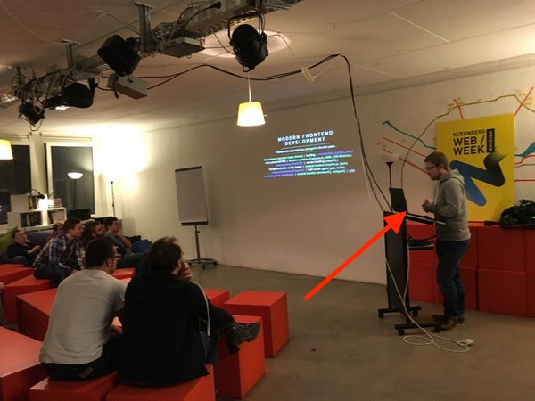
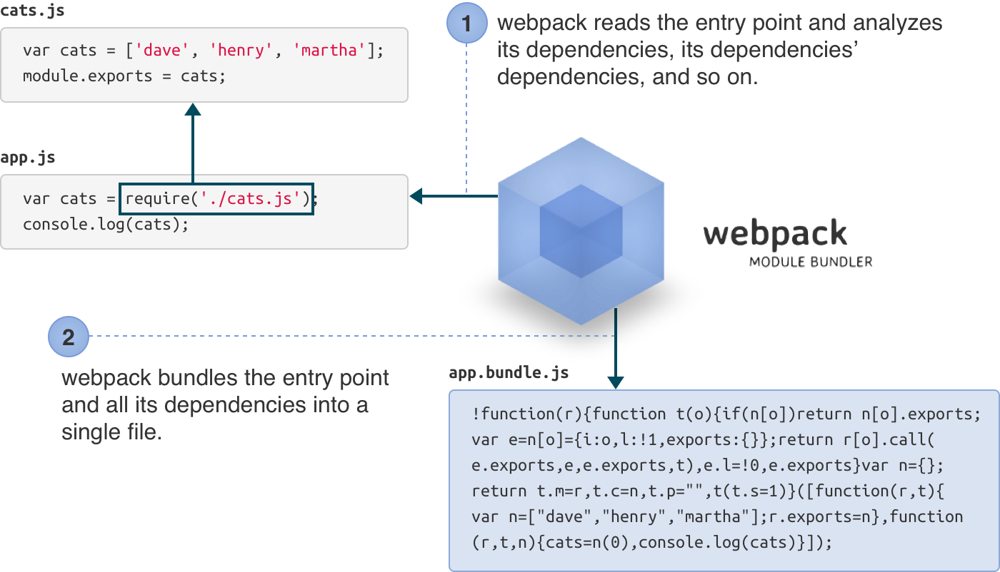
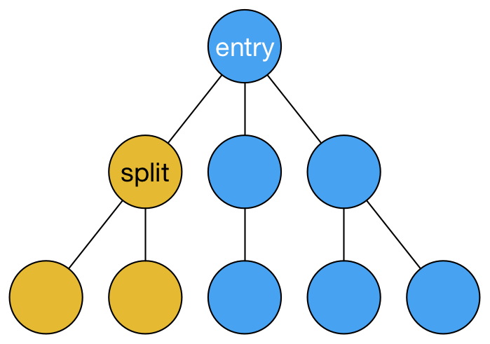
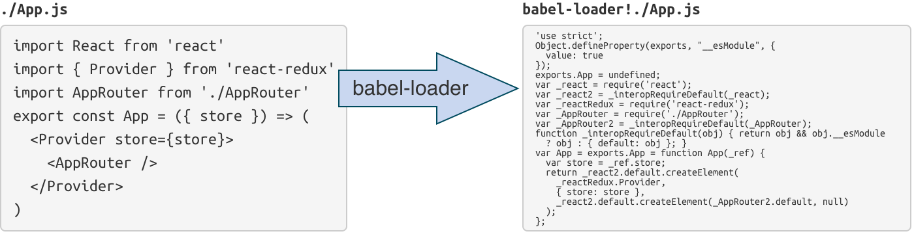
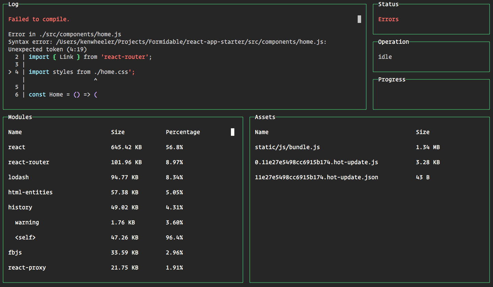
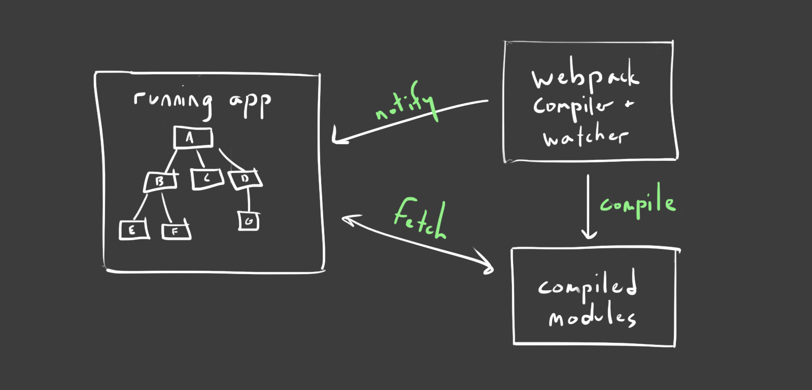
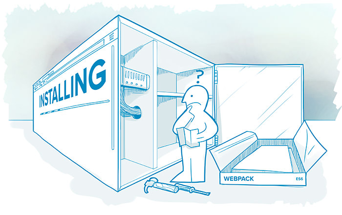

Привет. Меня зовут Павел Голован.
JavaScript и Node.js разработчик в компании Intetics.
Тобиас @sokra Копперс


module.exports = {context: `${__dirname}/entries`, // || process.cwd()entry: {lib: 'lib.js',app: 'app.js'},output: {path: `${__dirname}/build`,filename: '[name].js'}}
require('path-to-whatever');
На этапе компиляции доступна переменная logo - имя файла с логотипом. В сборку должен войти только требуемый файл.
//Directory: './img'//Regular expression: /^.*\.svg$/require('./img/' + logo + '.svg')
let imgContext = require.context('img', true, /\.svg$/);imgContext.keys().forEach((key) => {if (key === logo) {imgContext(key);}});
resolve: {root: path.resolve(__dirname),extensions: ['', '.js', '.json'],alias: {'%config%': `config${ isDebug ?'-debug' : '' }.json`,}}
require('%config%');
// Badrequire('app/components/record/record-edit.js');require('app/components/record/record-detail.js');// Goodrequire('%record%/record-edit.js');require('%record%/record-detail.js');
// platform - это переменная на этапе компиляцииif (platform === 'native') {require('native-lib.js');}
// Код на клиентеif (true) {require('native-lib.js');}
DefinePlugin позволяет создавать глобальные константы, значение которых может быть сконфигурировано во время компиляции.
// webpack.config.jsplugins: [new webpack.DefinePlugin({platform: JSON.stringify(platform)})]

Chunks - это фрагменты кода, которые загружаются и исполняются по требованию, что позволяет уменьшить размер исходного загружаемого файла и загружать код по по мере необходимости.
require.ensure(dependencies, callback)require(dependencies, callback)// Вместо изменения версии вручнуюapp_v1_3.js
// Добавляем хэш файла к имени во время сборкиoutput: {filename: '[name]-[hash].js'}

https://webpack.github.io/docs/list-of-loaders.html - 214 loaders!
// webpack.config.jsloaders: {[{ test: /\.less$/, loader: 'style!css!less?noIeCompat' }]}
loaders: {[{test: /\.js$/,loader: 'babel-loader',query: {presets: ['es2015'],cacheDirectory: true}}]}
//Добавляет в конце модуля//module.exports = Handlebars;let Handlebars = require('exports?Handlebars!handlebars.js');
//Добавляет в начале модуля//this.App = window.App;require('imports?this.App=>window.App!app.js');
// Загружает модуль 1 раз игнорируя его зависимостиrequire('script!awesome-lib.js');
//webpack.config.jswebpackConfig.entry.vendor = ['lodash', 'moment', 'etc'];webpackConfig.plugins = [new webpack.optimize.CommonsChunkPlugin('vendor','vendor.js')];
//webpack.config.jswebpackConfig.plugins = [new webpack.ProvidePlugin({Promise: 'bluebird'})];
//webpack.config.jswebpackConfig.plugins = [new webpack.BannerPlugin('**Bundle License Code**')];

npm install webpack-dashboard --save-dev
webpackConfig.plugins = [ new DashboardPlugin() ];
webpack-dashboard -- webpack-dev-server --config ./webpack.config.js
new webpack.optimize.UglifyJsPlugin()new webpack.optimize.DedupePlugin()new webpack.optimize.LimitChunkCountPlugin({maxChunks: 15})new webpack.optimize.MinChunkSizePlugin({minChunkSize: 10000})
output: {path: path.resolve(__dirname, "build"),publicPath: "/assets/",filename: "bundle.js"}
$ webpack-dev-server --inline --content-base build/
Обновляет клиентский скрипт без перезагрузки страницы
$ webpack-dev-server --hot --inline --content-base build/
Открываем приложение в браузере
http://localhost:8080/assets
